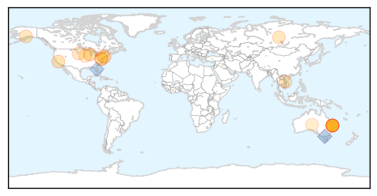
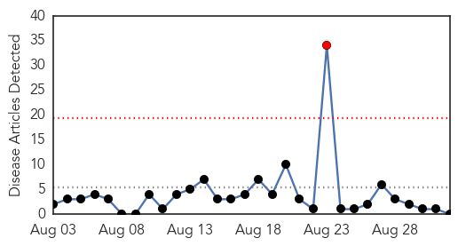

Influenza
30-Day Web Trend
0 alerts, 0 warnings
30-Day Twitter Trend
4 alerts, 0 warnings
Article Locations
Article Confidences
Top Articles:
- 0.980
- Thiesfeldt argues against mandatory flu shots
- 0.970
- Strain comeback behind Qld horror flu year
- 0.969
- Strain comeback behind Qld horror flu year
- 0.969
- Breaking National News and Australian News
- 0.969
- Strain comeback behind Qld horror flu year
- 0.939
- AmeriCares and Walgreens offer flu shots for the uninsured
- 0.898
- Illawarra flu cases higher than normal
- 0.838
- Queensland Health confirms influenza strain removed from vaccine before outbreak
- 0.751
- August 31, 2015 Archives
- 0.751
- August 31, 2015 Archives
- 0.751
- August 31, 2015 Archives
- 0.751
- August 31, 2015 Archives
- 0.751
- August 31, 2015 Archives
- 0.700
- Horses at state fair need health papers
- 0.687
- Farmers Prepare For Autumn Bird Flu Flare Up
- 0.575
- Rotavirus rates drop dramatically in Waikato
- 0.521
- September is National Sickle Cell Awareness Month
Top Tweets:
- 0.982
- RT: NEWS SCAN: Ebola vaccine in Sierra Leone, avian flu outbreaks in Vietnam, influenza A & B illness http://t.co/RJO9ioACAd
- 0.733
- What you should know for the 2015-2016 flu season: http://t.co/BSy4GHLxg4. influenza flu
- 0.716
- RT: Child, 4, dies as flu [H3N2] virus takes hold [NewZealand] influenza http://t.co/caCJTmrhTU
- 0.688
- RT: Confirming a less severe strain of the influenza virus known as the B 'Brisbane' virus is a contributing factor to a rec…
- 0.681
- RT: Why You Should Get a Flu Vaccine http://t.co/38j1GF2Xhm Influenza respiratoryinfection fluvaccine CDC fluseason
- 0.667
- Queensland on brink of influenza epidemic, doctors fear http://t.co/YbKDN5oqPW
- 0.586
- Any influenza can be dangerous to high-risk people. Occasionly influenza B has proven particularly severe in young children.
Cholera
30-Day Web Trend
1 alerts, 0 warnings

30-Day Twitter Trend
5 alerts, 0 warnings
Article Locations

Article Confidences

Top Articles:
-
No articles found for Sep 01, 2015
Top Tweets:
-
No tweets found for Sep 01, 2015